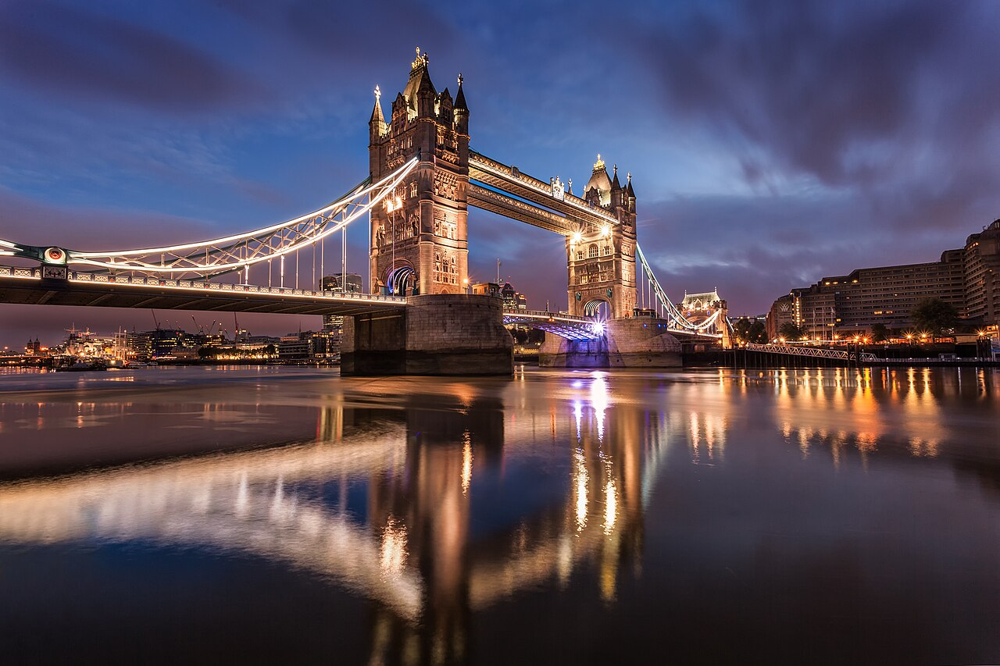
런던 타워 브리지 | Tower_Bridge_at_Dawn.jpg ↗
사진: Fuzzypiggy | CC BY-SA 3.0 |
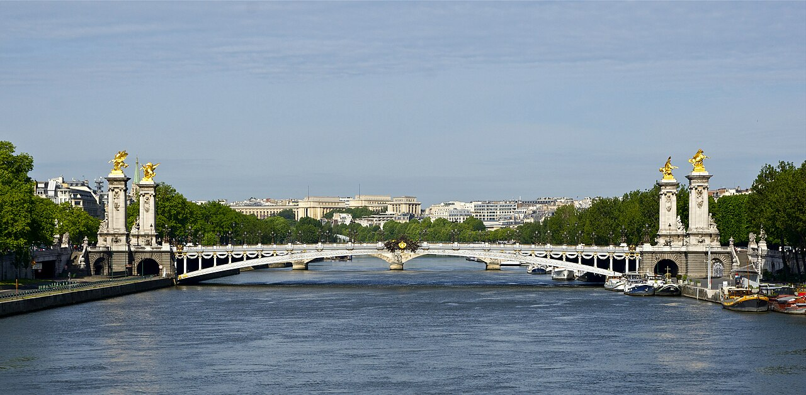
파리 알렉상드르 3세 다리 | Pont_Alexandre_III_depuis_pont_de_la_Concorde_Paris.jpg ↗
사진: Jebulon | CC0 |
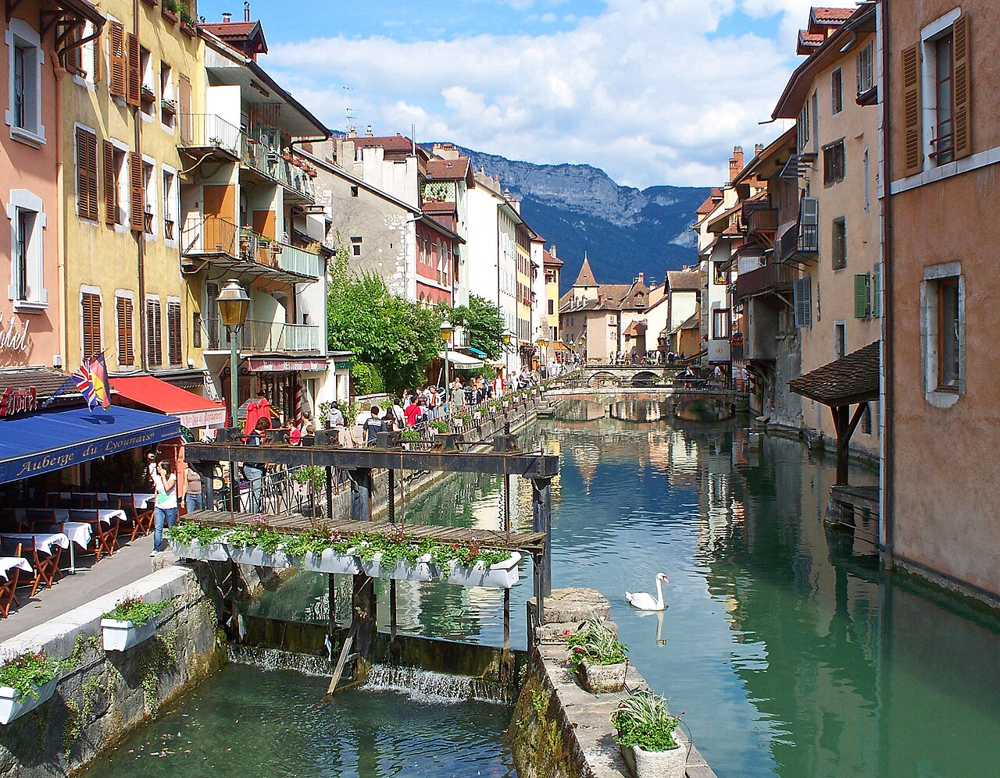
안시 구시가지의 티우 운하 | AnnecyThiou.jpg ↗
사진: Pareloup | CC BY-SA 3.0 |
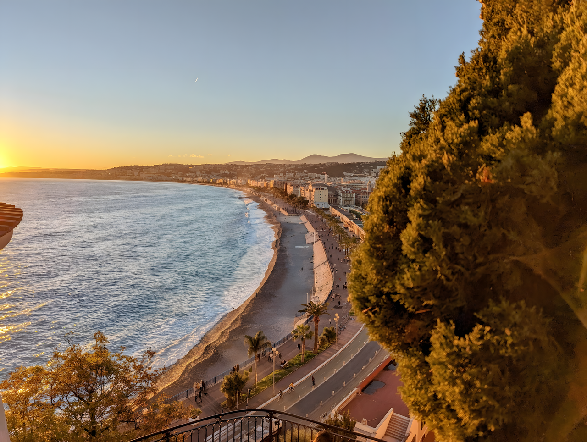
니스 프롬나드 데 장글레 | CollineDuChateau_NiceFrance2022.png ↗
사진: 3602kiva | CC0 |
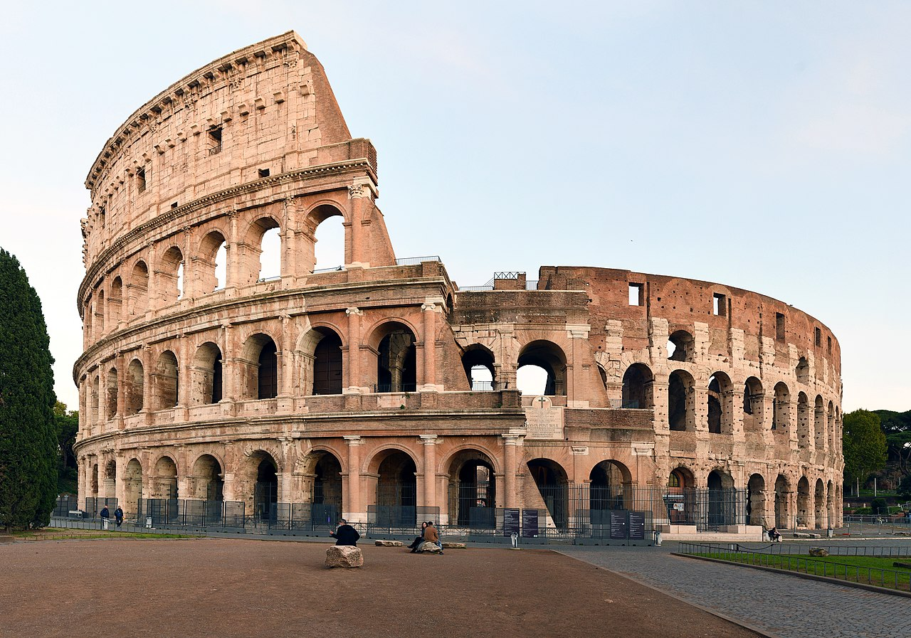
로마 콜로세움 | Colosseo_2020.jpg ↗
사진: FeaturedPics | CC BY-SA 4.0 |
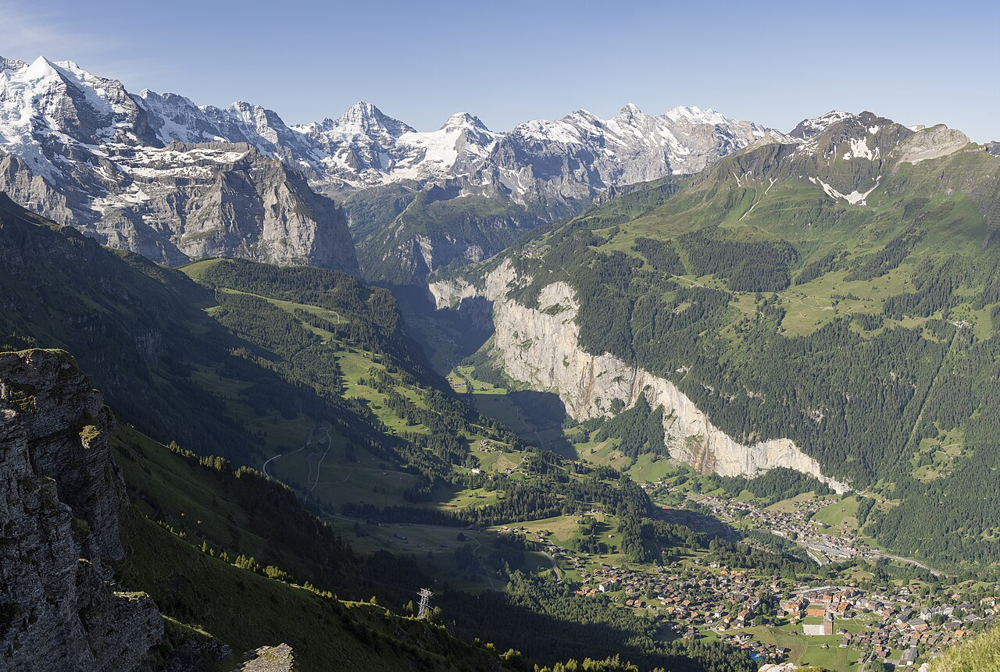
스위스 라우터브루넨 | 1_lauterbrunnen_valley_wengen_2022.jpg ↗
사진: Chensiyuan | CC BY-SA 4.0 |
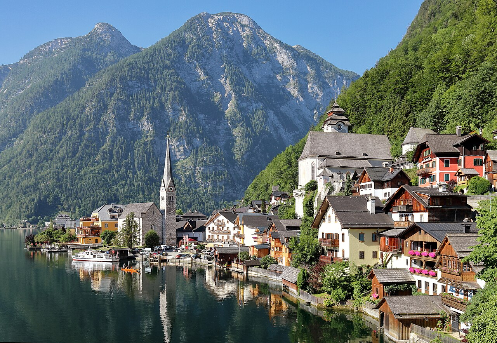
오스트리아 할슈타트 | Hallstatt_-_Zentrum_.JPG ↗
사진: C.Stadler/Bwag | CC BY-SA 4.0 |
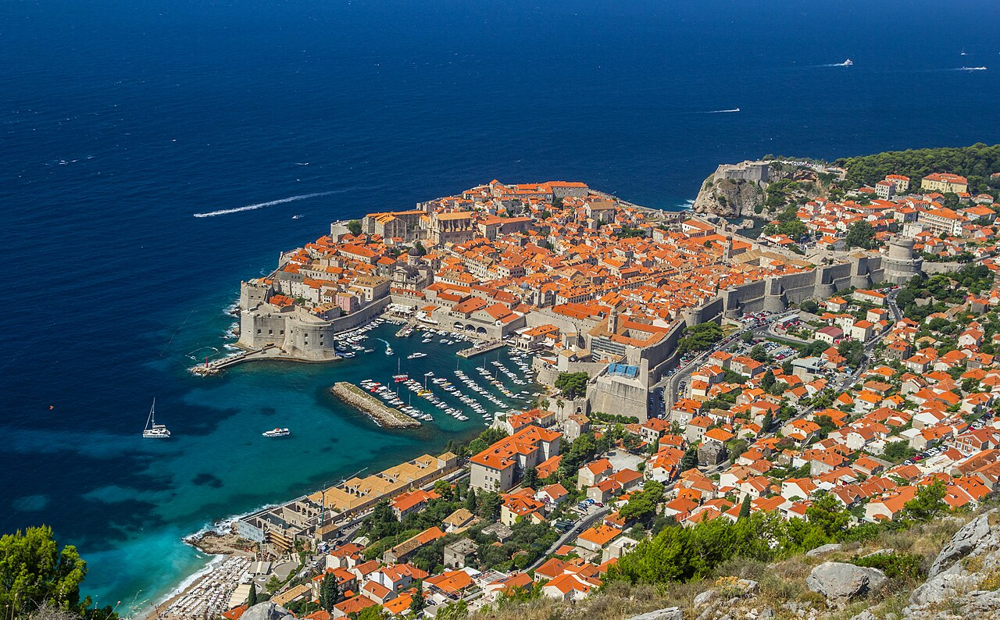
크로아티아 두브로브니크 | The_walls_of_the_fortress_and_View_of_the_old_city._panorama.jpg ↗
사진: Zysko serhii | CC BY-SA 4.0 |
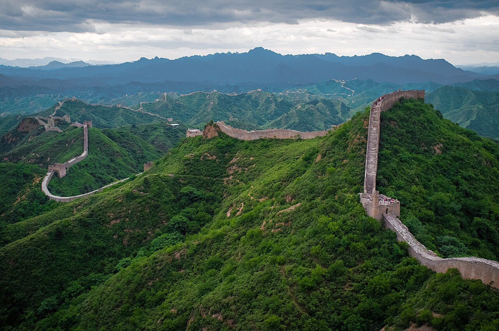
중국 만리장성 | The_Great_Wall_of_China_at_Jinshanling-edit.jpg ↗
사진: Severin.stalder | CC BY-SA 3.0 |
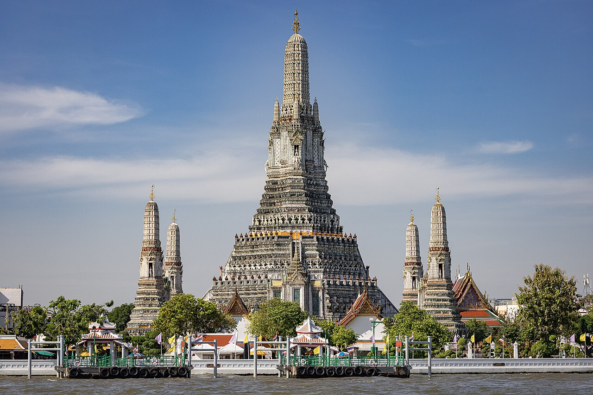
방콕 왓 아룬 | เจดีย์ประธานทรงปรางค์วัดอรุณ2.jpg ↗
사진: Mastertongapollo | CC BY-SA 4.0 |
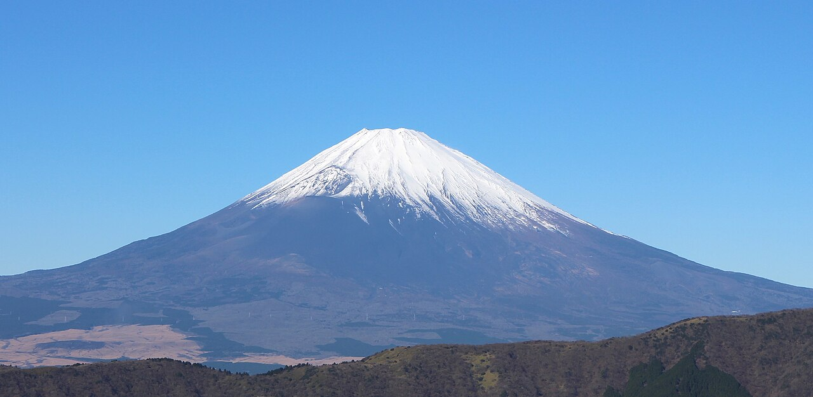
일본 후지산 | View_of_Mount_Fuji_from_Ōwakudani_20211202.jpg ↗
사진: Suicasmo | CC BY-SA 4.0 |
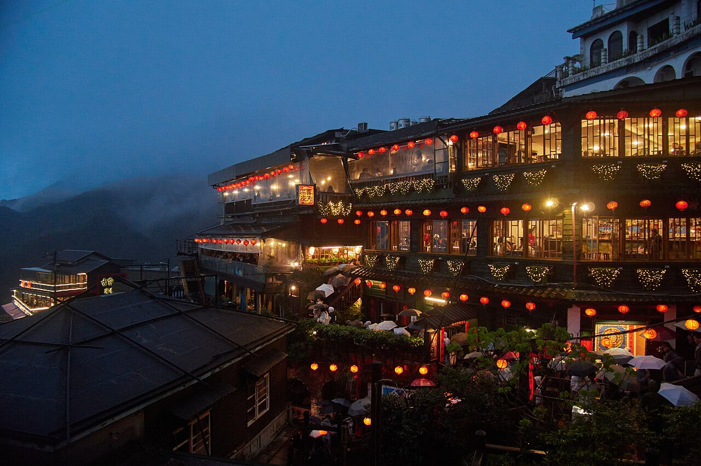
대만 지우펀 | A-mei_Tea_House.jpg ↗
사진: lumoplank | CC0 |

리스본 벨렝탑 | Torre_Belém_April_2009-4a.jpg ↗
사진: Alvesgaspar | CC BY-SA 3.0 |
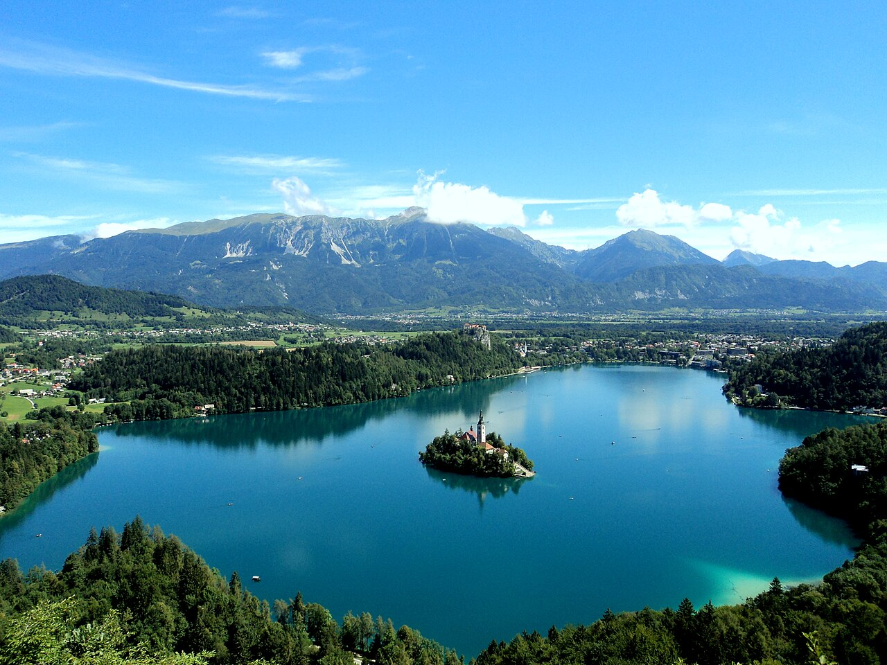
슬로베니아 블레드 호수 | Lake_Bled_from_the_Mountain.jpg ↗
사진: Canadianhockey91 | CC BY-SA 3.0 |
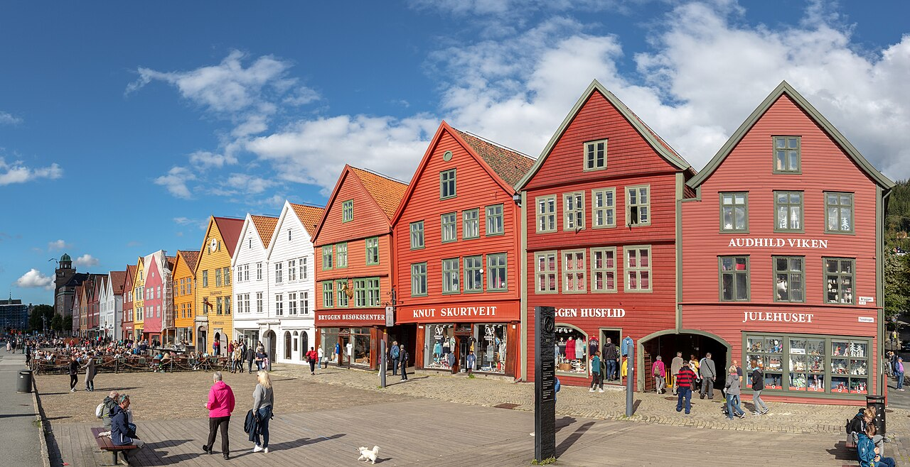
베르겐 브뤼겐 | Bryggen,_Bergen,_Noruega,_2019-09-08,_DD_115-117_PAN.jpg ↗
사진: Diego Delso | CC BY-SA 4.0 |
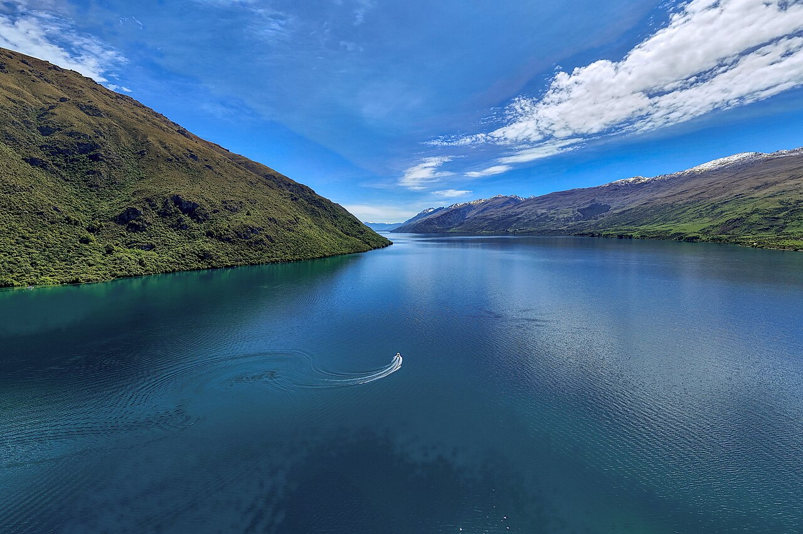
뉴질랜드 와카티푸 호수 | LakeWakatipuNov172024_02.jpg ↗
사진: Hagai Agmon-Snir حچاي اچمون-سنير חגי אגמון-שניר | CC BY-SA 4.0 |